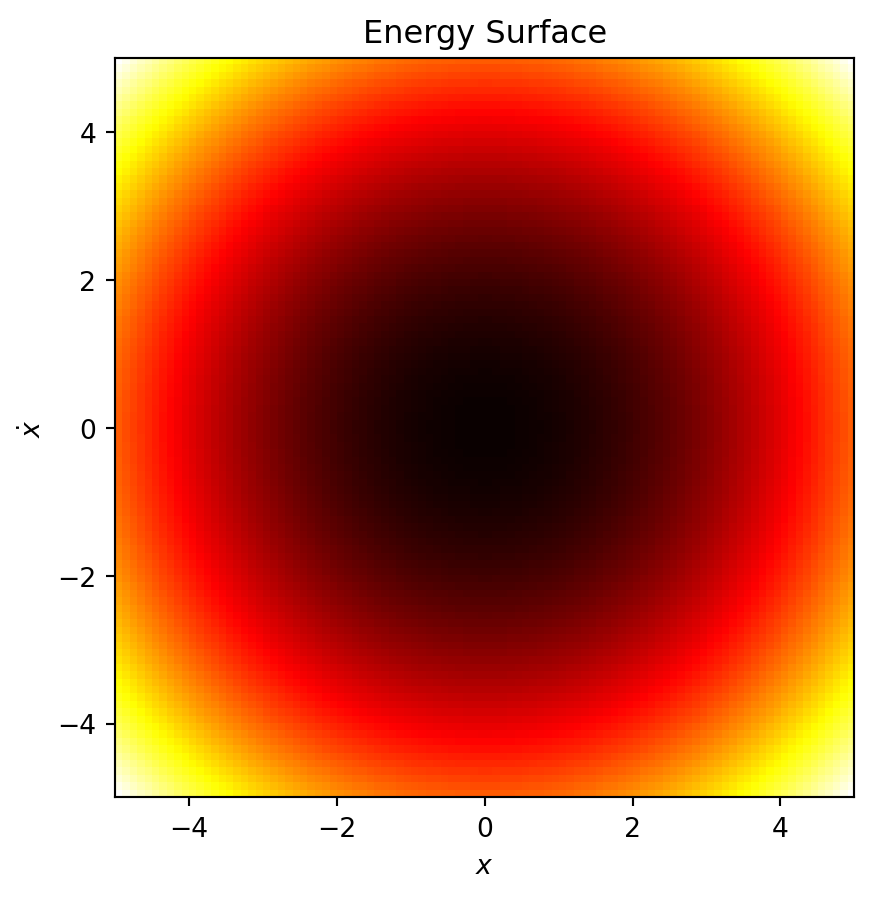
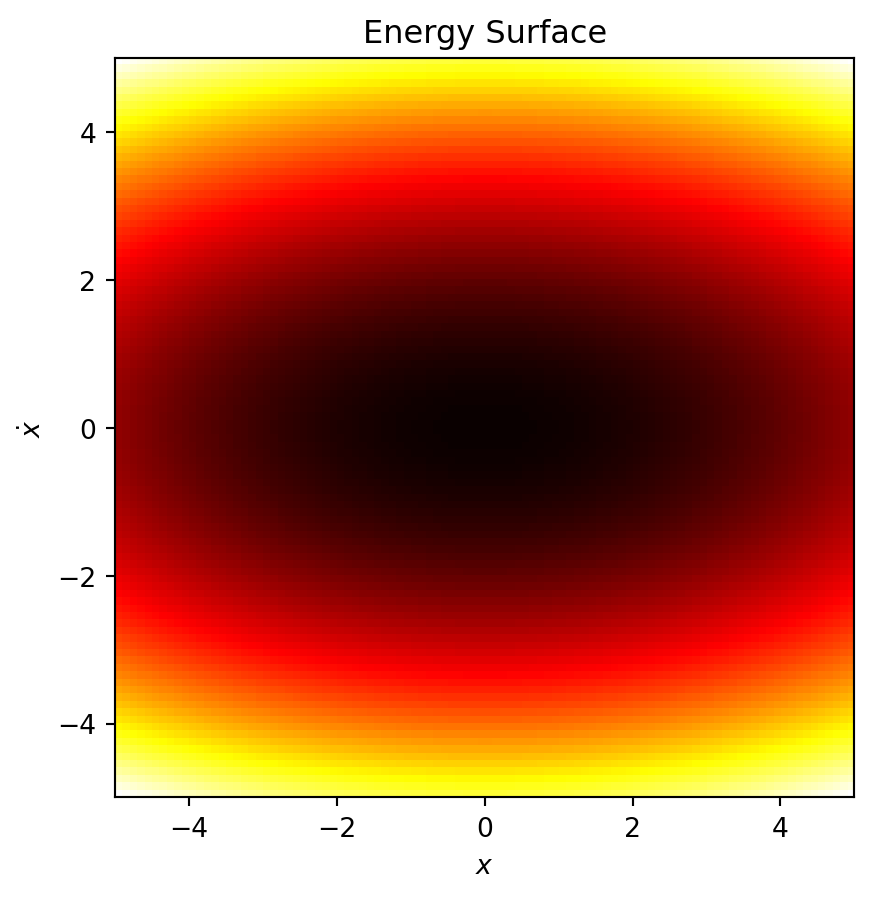
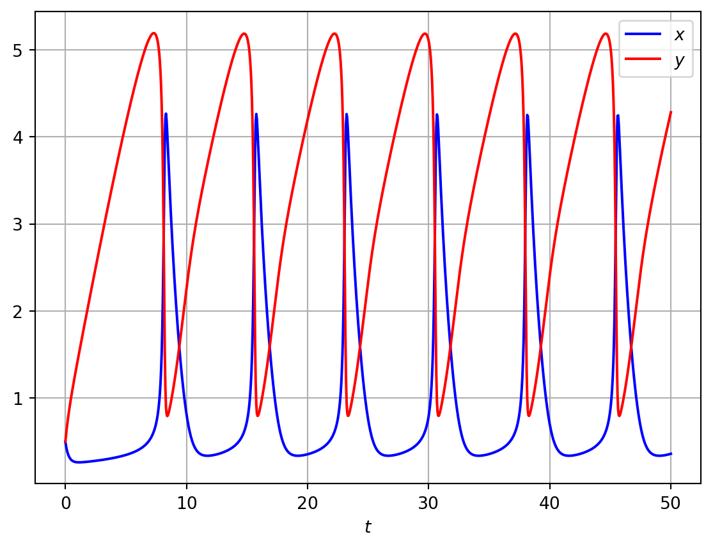
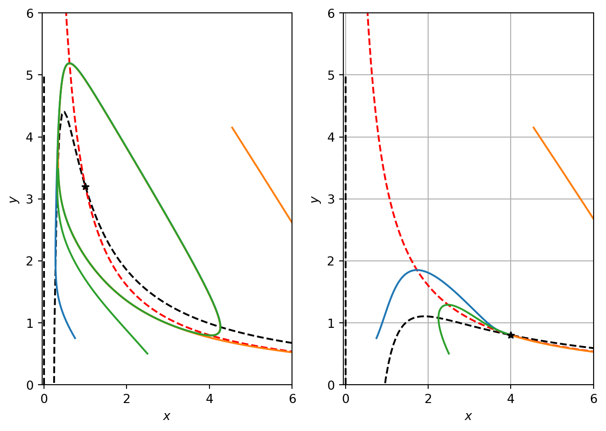
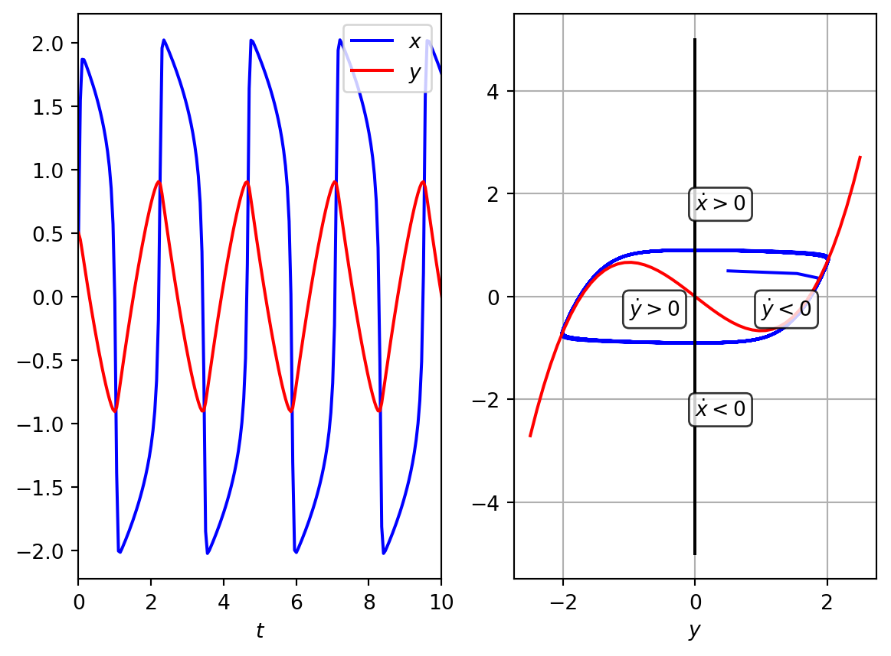

Consider a system \[\dot{\mathbf{x}}=\mathbf{f}(\mathbf{x}).
\]
A closed orbit is a period \(T\) solution such that \[
\begin{aligned}
x(t+T)=x(t) \quad \forall t.
x(t+s)\neq x(t) \quad 0<s<T.
\end{aligned}
\]
A limit cycle is an isolated closed orbit of a dynamical system.
Limit cycles are important solutions of dynamical systems arising throughout biological and physical systems (e.g. harmonic oscillator, circadian rhythms).
As the dynamics uncouple we can treat the variables separately. The \(r\) equation \[
\dot{r}=r(1-r^2)
\] has fixed points at \(r^*=0\) and \(r^*=1\). \(r^*=0\) is unstable whilst \(r^*=1\) is stable. Hence all trajectories (except \(r^*=0\)) tend to the circle \(r^*=1\) as \(t\rightarrow \infty\).
6.2.2 The Van der Pol oscillator
Consider the Van der Pol equation \[
\ddot{x}+\mu(x^2-1)\dot{x}+x=0
\] where \(\mu\geq 0\).
The nonlinear term acts as a positive damping term for \(|x|>1\) and negative damping term for \(|x|<1\). See Figure 6.1 for numerical solutions that show limit cycle solutions in two limiting cases: \(\mu \ll 1\) and \(\mu\gg 1\).
Figure 6.1: Numerical solutions of van der Pol oscillator
Some questions these numerical solutions pose: - Can we prove that limit cycles exist or do not exist for a given dynamical system? - what type of bifurcations do limit cycle solutions occur?
6.3 Ruling out closed orbits
In some situations we may wish to rule out the possibility that closed orbits exist.
6.3.1 Gradient systems
Suppose a system can be written in gradient form \[
\dot{\mathbf{x}}=-\nabla V
\] for some continuously differentiable, single valued scalar function, \(V\).
Theorem 1
Closed orbits cannot exist in gradient systems.
Example 6.1 Show that the system \[
\begin{aligned}
\dot{x} & =\sin y\\
\dot{y} &= x\cos y.
\end{aligned}
\] has no closed orbits.
Hint: write the system in gradient form.
Example 6.2 Show that the system \[
\begin{aligned}
\ddot{x} + \dot{x}^3+x=0
\end{aligned}
\] has no closed orbits.
Hint: consider the energy function \[
E=\frac{1}{2}(x^2+\dot{x}^2).
\] Suppose a limit cycle exists with period \(T>0\). Compute \[
\Delta E = \int_0^T \dot{E}dt
\] and show that there is a contradiction.
Code
import numpy as npimport matplotlib.pyplot as plt# Create gridx = np.linspace(-5, 5, 100)y = np.linspace(-5, 5, 100)X, Y = np.meshgrid(x, y)# Example surface functionZ = X**2+ Y**2# Plot heatmapplt.imshow(Z, cmap='hot', extent=[-5,5,-5,5], origin='lower')plt.title("Energy Surface")plt.xlabel("$x$")plt.ylabel("$\dot{x}$")plt.show()

6.3.2 Lyapunov functions
Even for systems that are not mechanical, we can try to construct an energy-like Lyapunov function that decreases along trajectories. If a Lyapunov function exists, closed orbits are impossible.
Theorem 2
Consider a system \(\dot{\mathbf{x}}=\mathbf{f}(\mathbf{x})\). Suppose that we can find a Lyapunov function, i.e. a continuously differentiable real valued function that satisfies:
\(V(x)>0 \forall \ x \ \neq \ x^*\)
\(\dot{V}<0 \ \forall \ x \ \neq \ x^*\)
\(\mathbf{x}^*\) is globally asymptotically stable, i.e. for all initial conditions \(\mathbf{x}(t)\rightarrow \mathbf{x}^*\) as \(t\rightarrow \infty\).
Example 6.3 By constructing a Lyapunov function, show that the system \[
\begin{aligned}
\dot{x} & =-x+4y\\
\dot{y} &= -x-y^3.
\end{aligned}
\] has no closed orbits.
Code
import numpy as npimport matplotlib.pyplot as plt# Create gridx = np.linspace(-5, 5, 100)y = np.linspace(-5, 5, 100)X, Y = np.meshgrid(x, y)# Example surface functionZ = X**2+4*Y**2# Plot heatmapplt.imshow(Z, cmap='hot', extent=[-5,5,-5,5], origin='lower')plt.title("Energy Surface")plt.xlabel("$x$")plt.ylabel("$\dot{x}$")plt.show()

Note: there is not a systematic technique to find Lyapunov functions and most systems cannot be written in gradient form.
6.3.3 Dulac’s criterion
A third method relies on Green’s theorem in the plane.
Theorem 3
Dulac’s criterion
Consider a 2D system \(\dot{\mathbf{x}}=\mathbf{f}(\mathbf{x})\). Let \(\mathbf{f}\) be a continuously differentiable vector field on a simply connected subset \(D\) of the plane. If there exists a continuously differentiable real-valued function \(g\) such that \(\nabla \cdot (g\dot{\mathbf{x}})\) has one sign throughout \(D\), there are no closed orbits in \(D\).
Example 6.4 By applying Dulac’s criterion, show that the system \[
\begin{aligned}
\dot{x} & =x(2-x-y)\\
\dot{y} &= y(4x-x^2-3).
\end{aligned}
\] has no closed orbits in the positive quadrant.
6.4 Poincaré-Bendixson theorem
For particular 2D systems it is also possible to prove the existence of closed orbits. Suppose we can construct a confined set that contains an unstable isolated fixed point. The long time solution must be a periodic orbit.
Theorem 4
Suppose that
\(D\) is a closed subset of the plane.
\(\dot{\mathbf{x}}=\mathbf{f}(\mathbf{x})\) is a continuously differentiable vector field on an open subset containing \(D\).
The fixed point in \(D\) is unstable.
There exists a trajectory \(C\) that is confined in \(D\).
Either \(C\) is a closed orbit or it spirals to a closed orbit as \(t\rightarrow \infty\).
Example 6.5 Consider the system \[
\begin{aligned}
\dot{r} & = r(1-r^2)+\mu r\cos(\theta)\\
\dot{\theta} &= 1.
\end{aligned}
\] where \(\mu \in \Re\). Show that there is a closed orbit for \(\mu\) sufficiently small.
Corollary 5
Chaotic solutions cannot exist in autonomous systems of two ODEs.
6.5 The Brusselator
A nondimensional model for a biological oscillator is given by \[
\begin{aligned}
\frac{d x}{d \tau} &= a-bx+x^2y-x = f(x,y), \\
\frac{d y}{d \tau} &= bx-x^2y = g(x,y),
\end{aligned}
\tag{6.1}\]
6.5.1 Fixed point analysis
Seeking fixed points \((x^*,y^*)\) of Equation 6.1 such that \[
f(x^*,y^*)=g(x^*,y^*)=0
\] yields
Hence \((a,b/a)\) is not a saddle. The trace of the Jacobian is \[
\mathrm{tr} A=b-1-a^2.
\]
Hence if \(b>1+a^2\) the trace is positive and, referring to Figure 4.1, the fixed point is linearly unstable. Otherwise, the fixed point is linearly stable.
In Figure 6.2 we numerically solve Equation 6.1 in the case of oscillatory solutions. Note that when the fixed point is unstable, the numerical solution indicates that the system has limit cycle solutions. A valid question to ask is whether one can prove that this is the case.
Code
import numpy as npimport matplotlib.pyplot as pltimport scipyfrom scipy.integrate import odeint# Define model parametersa=1.0b=3.2# Compute RHS of the brusselator modeldef rhs_bruss_model(z,t): rhs=np.zeros_like(z) x=z[0] y=z[1] dx_dt=a-b*x+x**2*y-x dy_dt=b*x-x**2*y rhs[0]=dx_dt rhs[1]=dy_dtreturn rhs# Define time domain and discretiset = np.linspace(0, 50, 1000)# Define ICsinit_cond=[0.5,0.5]# Integrate ODEssol1 = odeint(rhs_bruss_model, init_cond,t)# Plot resultsx=sol1[:,0]y=sol1[:,1]fig, ax= plt.subplots()ax.plot(t, x, 'b',t,y,'r')ax.legend(['$x$','$y$'],loc='best')ax.set_xlabel('$t$')plt.grid()plt.show()

Figure 6.2: Numerical solutions of the Brusselator model
6.5.3 Applying the Poincaré-Bendixson theorem
Recall that the Poincaré-Bendixson theorem can be used to prove the existence of limit cycle solutions in a case where a bounding set encloses a single unstable fixed point. Hence given the case of the Brusselator with \(b>a^2+1\), the identification of a bounding set will allow application of the Poincaré-Bendixson theorem and hence prove the existence of limit cycle solutions.
We begin by defining the nullclines of the system. The \(x\) nullcline is given by
\[
y=\frac{1+b}{x}-\frac{a}{x^2}.
\]
The \(y\) nullclines are given by
\[
y=\frac{b}{x} \ \ \ \textrm{and} \ \ \ x=0.
\]
In the positive quadrant, the \(x\) nullcline has a single root at \(a/(1+b)\), tends to 0 as \(x\rightarrow \infty\) and has a maximum at \(x=2a/(1+b)\).
Code
import numpy as npimport matplotlib.pyplot as pltimport scipyfrom scipy.integrate import odeint# Discretise x for plotting nullclinesx_vec=np.linspace(0.01,6,100)# Compute quantities needed for phase planedef ComputeBrusselatorSol(a,b,x_vec): t = np.linspace(0, 10, 1000)# Define different ICs init_cond1=[0.75,0.75] init_cond2=[4.55,4.15] init_cond3=[2.5,0.5]# steady state ss=[a,b/a]# Integrate ODEs alpha=2.0 sol1 = odeint(rhs_bruss_model, init_cond1,t) sol2 = odeint(rhs_bruss_model, init_cond2,t) sol3 = odeint(rhs_bruss_model, init_cond3,t)# Compute nullclines x_ncline=(1+b)/x_vec-a/x_vec**2 y_ncline_1_a=[0,0] y_ncline_1_b=[0,5] y_ncline_2_x=b/x_vecreturn sol1,sol2,sol3,ss,x_ncline,y_ncline_1_a,y_ncline_1_b,y_ncline_2_x# Compute quantitieda=1.0b=3.2sol1,sol2,sol3,ss,x_ncline,y_ncline_1_a,y_ncline_1_b,y_ncline_2_x=ComputeBrusselatorSol(a,b,x_vec)# PLot resultsfig, ax = plt.subplots(1,2)ax[0].plot(x_vec,x_ncline,'k--')ax[0].plot(y_ncline_1_a,y_ncline_1_b,'k--')ax[0].plot(x_vec,y_ncline_2_x,'r--')ax[0].plot(sol1[:,0],sol1[:,1],sol2[:,0],sol2[:,1],sol3[:,0],sol3[:,1])ax[0].plot(ss[0],ss[1],'k*')ax[0].set_xlabel('$x$')ax[0].set_ylabel('$y$')ax[0].set_xlim([-0.05,6])ax[0].set_ylim([-0.005,6])# Try different parametersa=4.0b=3.2# Recompute quantitiessol1,sol2,sol3,ss,x_ncline,y_ncline_1_a,y_ncline_1_b,y_ncline_2_x=ComputeBrusselatorSol(a,b,x_vec)# PLot resultsax[1].plot(x_vec,x_ncline,'k--')ax[1].plot(y_ncline_1_a,y_ncline_1_b,'k--')ax[1].plot(x_vec,y_ncline_2_x,'r--')ax[1].plot(sol1[:,0],sol1[:,1],sol2[:,0],sol2[:,1],sol3[:,0],sol3[:,1])ax[1].plot(ss[0],ss[1],'k*')ax[1].set_xlabel('$x$')ax[1].set_ylabel('$y$')ax[1].set_xlim([-0.05,6])ax[1].set_ylim([-0.005,6])plt.tight_layout()plt.grid()plt.show()

Figure 6.3: Numerical solution of the Brusselator.
In Figure 6.3 we plot the the oscillatory solution together with the nullclines. Note that the nullclines separate the phase plane into regions of constant sign. Note that the \(x\) nullcline separates the phase plane into regions where \(dx/dt>0\) and \(dx/dt<0\). Similarly, the \(y\) nullcline separates the phase plane into regions where \(dy/dt>0\) and \(dy/dt<0\).
Note that signs for \(dx/dt\) can be determined by considering behaviour of the function \(f\) as one moves away from the nullcline where, by definition, \(f=0\). Consider some point that sits on the x nullcline. While keeping the \(x\) value fixed, increase \(y\) so the point moves vertically in the phase plane. This implies that \(f\) has increased because the only term to change is \(x^2y\). Hence \(f\) increases upon increasing \(y\) and therefore \(dx/dt\) is positive for all points above the \(x\) nullcline. Alternatively, note that in the Jacobian matrix we have calculated that \(\partial f/\partial y\) is positive.
6.5.3.1 A confined set
To define a confined set, we construct the closed loop ABCDEA in phase space (see Figure 6.4) where the points A, B, C, D and E are defined as follows. Let the points A and B be two points on the \(x\) axis with coordinates \[
(\delta,0)
\] and \[
\left(\frac{a}{1+b},0\right).
\] respectively. We choose \(\delta>a\). The outward normal to the line segment AB is \(\mathbf{n}=[0,-1]\). To show that the trajectories point inwards along AB, we compute
Hence trajectories point inwards on the line segment BC.
Consider the line segment CD where D has coordinates \[
\left(k,b\frac{1+b}{a}\right),
\] with \(k>a\)
The normal to this line segment is [0,1]. As CD lies in a region of the phase plane where \(dy/dt<0\),
\[
\mathbf{n}.\left[\frac{dx}{dt},\frac{dy}{dt}\right] = \frac{dy}{dt}<0.
\] Hence trajectories point inwards on the line segment CD.
Let E be a point that sits on the \(x\) nullcline at some position \[
\left(\delta,\frac{\delta(1+b)-a}{\delta^2}\right),
\] such that DE is a straight line with outwardly pointing normal vector \([1,1]\). Along DE
Figure 6.4: Numerical solution of the Brusselator.
Hence at all points on the closed loop ABCDEA trajectories point inwards (see Figure 6.4). Hence ABDCEA is a confined set and the Poincaré-Bendixson theorem states that the system exhibits limit cycle solutions when the fixed point is unstable. This is precisely the behaviour that we see numerically in Figure Figure 6.3.
6.6 Relaxation oscillators
Consider the van Der Pol equation \[
\ddot{x}+\mu(x^2-1)\dot{x}+x=0
\] in the limiting case \(\mu\gg1\). Here the nonlinear term is large and the system possesses relaxation oscillations characterised by fast transitions that toggle between distinct states.
To study the limit \(\mu\gg1\) we make a Lienard transformation by defining a new variable \[
w=\dot{x}+\mu(\frac{1}{3}x^2-x).
\] Then the second order ODE can be written as the system \[
\dot{w}=-x
\dot{x}=w-\mu F(x)
\] where \[
F(x)=x(\frac{1}{3}x^2-1).
\]
If we rescale variable such that \[
w=\mu y \quad \tau=\frac{t}{\mu}
\] the system can be written as \[
\dot{y}=-x
\epsilon \dot{x}=y- F(x)
\] where \[
\epsilon = \frac{1}{\mu^2} \ll 1.
\]
Fixed points satisfy \[
x^*=0 \quad y^*=F(x^*).
\] Hence \((0,0)\) is a unique fixed point. To perform linear stability, The Jacobian matrix is \[
A=\begin{pmatrix}
-\frac{1}{\epsilon}F'(x) & \frac{1}{\epsilon} \\
-1 & 0
\end{pmatrix}.
\] Evaluating at the fixed point \[
A_{(0,0)}=\begin{pmatrix}
-\frac{1}{\epsilon}F'(0) & \frac{1}{\epsilon} \\
-1 & 0
\end{pmatrix} =\begin{pmatrix}
\frac{1}{\epsilon} & \frac{1}{\epsilon} \\
-1 & 0
\end{pmatrix}.
\] As the trace and determinant is positive, the fixed point is linearly unstable.
The \(x\) and \(y\) nullclines are given by \[
y=F(x) \quad \textrm{and} x=0,
\] respectively. Above the cubic \(\dot{x}>0\) and in the right half-plane \(\dot{y}<0\).
It can be shown that the system posesses a confined set. Hence by application of Poincaré Bendixson theorem it must have a limit cycle solution.
To describe the limit cycle we perform a fast/slow timescale analysis. On the slow time scale the trajectory is approximately on the cubic nullcline, i.e. \[
y\sim F(x).
\] The system dynamics are described by \[
\dot{y}=-x.
\] Hence \[
\dot{x}(x^2-1)=-x.
\]
Code
import numpy as npimport matplotlib.pyplot as pltimport scipyfrom scipy.integrate import odeint# Define model parametersdef F(x): F=x*(x**2/3.0-1.0)return F# Define rhs of ODEsdef tran_vdp_model(z,t,eps): x=z[0] y=z[1] rhs=np.zeros_like(z) xdot=1/eps*(y-F(x)) ydot=-x rhs[0]=xdot rhs[1]=ydotreturn rhs# Define discretised time domaint = np.linspace(0, 50, 1000)# Define ICinit_cond=[0.5,0.5]eps=0.05# Numerically integrate ODessol1 = odeint(tran_vdp_model, init_cond,t,args=(eps,))# PLot resultsx=sol1[:,0]y=sol1[:,1]x_vec=np.linspace(-2.5,2.5)fig, ax=plt.subplots(1,2)ax[0].plot(t, x, 'b',t,y,'r')ax[0].legend(['$x$','$y$'],loc='best')ax[0].set_xlabel('$t$')ax[0].set_xlim([0,10])ax[1].plot(x, y, 'b')ax[1].plot(x_vec,F(x_vec),'r',[0,0],[-5,5],'k')#ax[1].legend(['$x$','$\dot{x}$'],loc='best')ax[1].set_xlabel('$x$')ax[1].set_xlabel('$y$')textstr=['$\dot{x}>0$','$\dot{x}<0$','$\dot{y}>0$','$\dot{y}<0$']x_cord=[0.0,0.0,-1.0,1.0]y_cord=[2.0,-2.0,0.0,0.0]for i inrange(len(textstr)): ax[1].text( x_cord[i],y_cord[i], textstr[i], fontsize=10, verticalalignment='top', bbox=dict(boxstyle="round", facecolor="white", alpha=0.8) )plt.grid()plt.show()

Figure 6.5: Numerical solutions of transformed VdP model. Here \(\epsilon=0.05\).
On the fast timescale the trajectory does not sit on the cubic nullcline, i.e. \[
y\neq F(x).
\] In this case \[
\dot{x}=\frac{1}{\epsilon}(y-(F(x)))\gg 1.
\] Hence \(x\) rapidly changes and \(y\) is approximately constant.
The limit cycle can then be represented by the closed loop ABCDA.
AB is a fast segment of the trajectory. Here \(\dot{x}<0\). \(x\) rapidly decreases until it collides with the left-most branch of the cubic nullcline whilst \(y\) is approximately constant.
On BC the trajectory is on the left branch of the cubic nullcline. As \(\dot{y}>0\), \(y\) increases on a slow timescale until the trajectory reaches the local maximum of the cubic nullcline (C).
CD is again a fast part of the trajectory. Now \(\dot{x}>0\). \(x\) rapidly increases until the trajectory reaches the right-most branch of the cubic nullcline with \(y\) approximately constant.
DA is again a slow segment of the trajectory. As \(\dot{y}<0\), the solutions decreases in \(y\) until it reaches the local minimum of the cubic nullcline (A).
Example 6.6 Show that the period of the van der Pol oscillator is \[
\mu(3-2\ln 2).
\]
Solution
The period of the limit cycle is dominated by the time spent on the slow segments BC and DA. The time spent on BC can be estimated by integrating \[
\dot{x}(x^2-1)=-x
\] from \(x=-2\) up to \(x=-1\).
Using separation of variables \[
(\frac{1}{2}x^2-\ln(|x|))_{x=-2}^{x=-1}=-T_{BC}.
\] Hence \[
T_{BC}= \frac{3}{2}-\ln 2.
\]
Similar arguments can be used to show that the time spent on the segment DA is equal to that spent on BC. Hence the period of the limit cycle is approximately \[
T\sim T_{BC}+T_{DA}\sim 3-2\ln 2.
\]
6.7 Excitable systems
Excitable systems can be thought of as being perturbed limit cycles. Consider a variant of the Van Der Pol oscillator given by \[
\dot{y}=-x+a
\epsilon \dot{x}=y- F(x)
\] where \(a>1\), i.e. we have added a positive constant to the right-hand side of the \(y\) equation.
Using a similar approach to above, there is a fixed point at \((a,F(a))\). The Jacobian is again \[
A_{(a,F(a))}=\begin{pmatrix}
-\frac{1}{\epsilon}F'(a) & \frac{1}{\epsilon} \\
-1 & 0
\end{pmatrix}
\] However, for \(a>1\), \(F'(a)<0\) and this fixed point is linearly stable.
The \(x\) and \(y\) nullclines are given by \[
x=a \quad \textrm{and} \quad y=F(x),
\] respectively.
To consider an excitable trajectory we again consider a fast-slow timescale analysis. This is valid for \(\epsilon \ll 1\).
Consider a trajectory initialised at \(A(0,F(a))\). Using the nullclines, \(\dot{x}<0\). As the phase point is not on cubic nullcline, \(\dot{x}<0\). Hence \(x\) rapidly decreases until the trajectory collides with the \(x\) nullcline. On this segment of the trajectory \(y=F(a)\).
When the trajectory is on the cubic nullcline, i.e. \(y=F(x)\), the system evolves on a slow time scale. However, \(\dot{y}>0\) and \(y\) increases until the trajectory reaches the local maximum of the cubic nullcline. At this point the trajectory switches to the fast timescale as \(\dot{x}\gg 1\), with \(x\) increasing until the trajectory intersects the right-most branch of the cubic nullcline. The system then follows the slow dynamics until it reaches the linearly stable fixed point.
This fixed point is stable to small perturbations. However, a large enough perturbation results in an excitable trajectory. the stimulus needed to excite the system is known as the threshold stimulus. The time needed can be estimated using a similar technique used to estimate the oscillator period in the case of the relaxation oscillator.
In the 1950s British Scientists Hodgkin and Huxley published Nobel prize winning work in which they discovered the fundamental principles that describe how electrical signals propagate in neurons. As part of their study they formulated a system of ODEs that could explain their experimental observations, a system that can be approximated by the above model. When a neuron is in a resting state (i.e. at a stable fixed point) it is stable to small perturbations. However, upon receiving a stimulus of large enough magnitude the neuron fires (becomes excited) and undergoes a large excursion in its electrical activity (i.e. an excitable trajectory).
With the app below you can explore numerical solutions of the excitablecycle system.
The app computes solutions to \[
\begin{aligned}
\epsilon \dot{x} &= y-F(x), \quad x(0)=x_0, \\
\dot{y}&=-x+a, \quad y(0)=y_0.
\end{aligned}
\]
Exercises:
Show that the van der Pol oscillator is retrieved in the case \(a=0\).
Show that \(1<a<1.3\) the system is excitable. Use the initial condition to explore the threshold required for an excitable trajectory.
Increase the value of the small parameter \(\epsilon\). Can you see how the accuracy of the fast-slow time scale analysis decreases as \(\epsilon\) increases?
#| '!! shinylive warning !!': |
#| shinylive does not work in self-contained HTML documents.
#| Please set `embed-resources: false` in your metadata.
#| standalone: true
#| viewerHeight: 800
#| label: fig-saddlenode
from shiny import App, Inputs, Outputs, Session, render, ui
from shiny import reactive
import numpy as np
from pathlib import Path
import matplotlib.pyplot as plt
from scipy.integrate import odeint
app_ui = ui.page_fluid(
ui.input_slider(id="eps",label="epsilon ",min=0.0001,max=1.0,value=0.005,step=0.0001),
ui.input_slider(id="a",label="a",min=-2.0,max=2.0,value=1.2,step=0.01),
ui.input_slider(id="T",label="T",min=10.0,max=100.0,value=20.1,step=0.1),
ui.input_slider(id="x_0",label="x_0",min=-3.0,max=3.0,value=-1.1,step=0.01),
ui.input_slider(id="y_0",label="y_0",min=-3.0,max=3.0,value=-2.1,step=0.01),
ui.output_plot("plot"),
)
def server(input, output, session):
@output
@render.plot
def plot():
fig, ax = plt.subplots(3,1,figsize=(12, 4))
#ax.set_ylim([-2, 2])
#
eps=float(input.eps())
a=float(input.a())
T=int(input.T())
x_0=float(input.x_0())
y_0=float(input.y_0())
def F(x):
F=x*(x**2/3.0-1.0)
return F
# Define rhs of ODEs
def tran_vdp_model(z,t,eps,a):
x=z[0]
y=z[1]
rhs=np.zeros_like(z)
xdot=1/eps*(y-F(x))
ydot=-x+a
rhs[0]=xdot
rhs[1]=ydot
return rhs
# Define discretised time domain
t = np.linspace(0, T, 1000)
# Define IC
init_cond=[x_0,y_0]
# Numerically integrate ODes
sol1 = odeint(tran_vdp_model, init_cond,t,args=(eps,a))
# PLot results
x=sol1[:,0]
y=sol1[:,1]
x_vec=np.linspace(-3.5,3.5)
fig, ax=plt.subplots(1,2)
ax[0].plot(t, x, 'b',t,y,'r')
ax[0].legend(['$x$','$y$'],loc='best')
ax[0].set_xlabel('$t$')
ax[0].set_xlim([0,T])
ax[1].plot(x, y, 'b',x[0],y[0],'m*')
ax[1].plot(x_vec,F(x_vec),'r',[a,a],[-5,5],'k')
#ax[1].legend(['$x$','$\dot{x}$'],loc='best')
ax[1].set_xlabel('$x$')
ax[1].set_ylabel('$y$')
ax[1].set_xlim([-3,3])
ax[1].set_ylim([-3.5,3.5])
textstr=['$\dot{x}>0$','$\dot{x}<0$','$\dot{y}>0$','$\dot{y}<0$']
x_cord=[0.0,0.0,a-1.0,a+1.0]
y_cord=[2.0,-2.0,0.0,0.0]
for i in range(len(textstr)):
ax[1].text(
x_cord[i],y_cord[i], textstr[i],
fontsize=10,
verticalalignment='top',
bbox=dict(boxstyle="round", facecolor="white", alpha=0.8)
)
fig.tight_layout()
plt.grid()
plt.show()
app = App(app_ui, server)
An app to explore numerical solutions of limit cycle/excitable solutions.